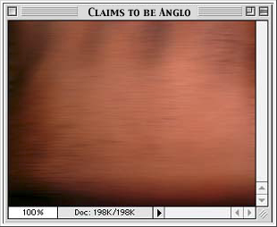

Background
Born in 1973.
Focused on music, live concerts and internet art.
Mendi - Poet , Keith - composer and sound designer
Both took BASIC in middle school and then later took other computer science classes in 7th grade.
Mendi Lewis Obadike :
Born in Palo Alto, California
Grew up writing poems, singing in bands and performing in theatres.
Experimented creating graphics in early years in Commodore Computers.
Keith Obadike :
Born in Nashville, Tennessee.
Interested in sound design.
Early Inspiration :
(1970) Parent's shop : Blackness is
Where african cultural art, crafts were sold
Liked the openness in the shop's name
Works:
Black.NET.Art Actions
Obadike focused on the selling points of blackness but then juxtaposed it with
“warnings” of the drawbacks of owning a black
identity.
Told to remove due to inappropirateness
It was the Obadike’s aim to address the many ways blackness
has been commodified — alluding to similarities
to that of a slave auction- and how it is seen
often as a vague concept separate from the black body.
Keeping up appearances (2001):
Click here to go to the project
Sentence fragments in black lower-case text, which describe a seemingly positive
relationship with a mentor, are scattered sparsely against a white background. Moving the mouse over the gaps between words reveals pink text in which
hidden aspects of the story are conveyed—the mentor
was sexually predatory, the narrator felt trapped.
The Pink of stealth (2003)
Fox hunting, interactive game that explores on relationship of language, color and class.
Browser-based work that administers a “digital brown paper bag test” to visitors,
toying with historical systems of racial categorization.
Provides a hex value of the skin color
"Assigning every user a hex code allows others to know who you really are online, and restrict access accordingly." - Obadike
